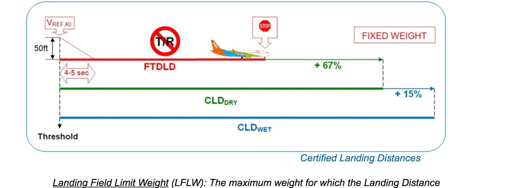

Lesson 09: Landing Speeds and Dispatch Landing Requirements
Learning objectives
- Define LDA and explain the displaced threshold.
- Define VREF and the final approach speed (FAS).
- Apply the dispatch landing field length rules for dry, wet and contaminated runways.
Landing distance available
The LDA is the runway length declared suitable for the landing ground run. Stopway cannot be used. An obstacle in the approach funnel creates a displaced threshold: the LDA starts at the displaced threshold, while the paved area before it remains usable for taxi, take-off and the landing roll-out of the opposite direction.

Landing speeds
VREF is at least 1.23 VSR0 in the landing configuration and not less than VMCL. The final approach speed (FAS) is VREF plus a correction: half the steady headwind component plus the full gust increment, at least 5 kt and at most 20 kt, and at least 5 kt below the flap placard speed. The gust increment is kept to touchdown; touchdown is normally between VREF and VREF − 5 kt.

Maximum allowable landing weight
For dispatch, the landing weight at destination and alternates is the lowest of the landing field limit weight, the landing climb limit weight (approach and landing climb gradients), the maximum structural landing weight and, where relevant, the quick-turnaround brake cooling limit. Not more than 50 % of the headwind and not less than 150 % of the tailwind are used, and slopes beyond ±2 % are accounted for (the B737NG is limited to ±2 %).
Certified landing distance
The flight-test landing distance (from 50 ft, aggressive technique, maximum manual braking, no reverse) is multiplied by 1.67 for a dry runway — the aeroplane must stop within 60 % of the LDA (CAT.POL.A.230). On a wet runway the requirement is 115 % of the dry distance (CAT.POL.A.235): 52 % of the LDA. On a contaminated runway it is the longer of the wet distance and 115 % of the approved contaminated landing distance.


Which runway?
The dispatch check is made for the most favourable runway in still air and for the runway most likely to be assigned with the expected wind (GM1 CAT.POL.A.230). If the weight only meets the first case, dispatch is possible with two suitable alternates; if it only fails the second, one suitable alternate is required — and in flight the actual landing weight must meet the limit for the actual wind.
Key takeaways
- VREF ≥ 1.23 VSR0; FAS = VREF + ½ steady headwind + full gust (5–20 kt).
- Dispatch dry: stop within 60 % of LDA (factor 1.67).
- Wet: 115 % of the dry distance (52 % of LDA).
- Check both the longest runway in still air and the expected runway with the expected wind.
Knowledge check
For dispatch to a dry runway, a jet must be able to stop within what part of the LDA?
- 50 %
- 60 %
- 70 %
- 85 %
Answer: B. CAT.POL.A.230: turbojet aeroplanes — 60 % of the LDA.